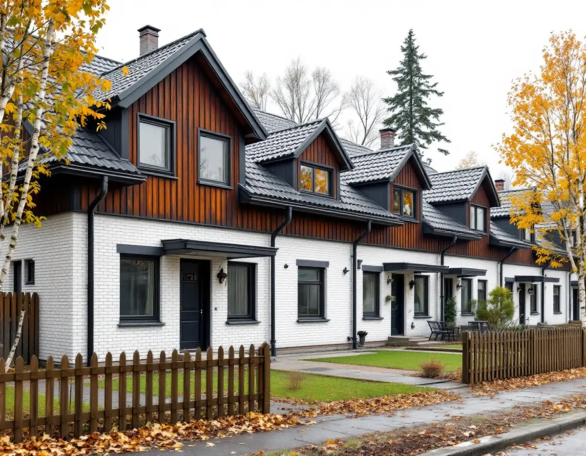
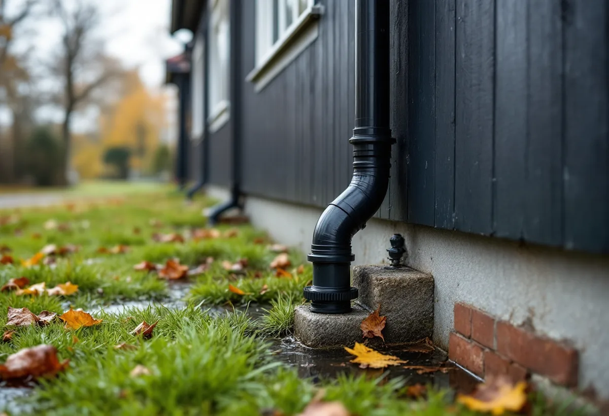

Platsbesök
Vi går igenom rännor, stuprör och beslag och ser var varje stuprör leder vattnet.
Upplands Väsby har drygt 7 000 bostäder i småhus enligt SCB. Ungefär hälften av kommunens ledningar i gatorna byggdes mellan 1960 och 1990, och kommunen arbetar med att få bort regnvatten som hamnar i spillvattnet, bland annat från stuprör. Geal Entreprenad AB byter hängrännor, stuprör och plåt på villor och radhus i Upplands Väsby, med gratis platsbesök och skriftligt kostnadsförslag.

Kommunfullmäktige antog vattentjänstplanen för Upplands Väsby den 11 november 2024. Där förklaras tillskottsvatten som vatten som hamnar i spillvattenledningarna genom till exempel inläckage, stuprör eller dagvattenledningar. Det vattnet behöver inte renas som spillvatten och belastar VA-anläggningen i onödan.
Enligt planen arbetar kommunen systematiskt och områdesvis för att minska tillskottsvattnet, bland annat för att minska risken för bräddning vid höga flöden. Området Övra Runby har utretts och arbetet med att ta bort tillskottsvatten pågår där, och fler områden ska utredas de kommande åren. Kommunen har till största delen ett duplikatsystem med separata ledningar för spill- och dagvatten, men i de äldsta områdena kan det förekomma kombinerade ledningar.
Kommunen skriver också uttryckligen att dagvatten och dräneringsvatten inte får kopplas till spillvattenservisen. När vi byter rännor och stuprör tittar vi därför på var stupröret försvinner ner i marken. Är du osäker på vart ledningen går kan kommunens kontaktcenter Väsby Direkt svara på frågor om din och den allmänna dagvattenanläggningen.

Vattentjänstplanen beskriver ett ledningsnät som till stor del byggdes samtidigt som villaområdena. Kommunen har cirka 137 kilometer dagvattenledningar och cirka 153 kilometer spillvattenledningar, och ungefär hälften av näten byggdes mellan 1960 och 1990, merparten på 1970-talet. Ledningarnas ålder gör enligt planen att de inom några år behöver förnyas.
Planen tar också upp skyfall, som enligt SMHI:s definition är minst 50 millimeter regn på en timme eller minst 1 millimeter på en minut. Vid skyfall går dagvattenledningarna fulla och vattnet rinner på markytan. Kommunen tog 2023 fram en skyfallskartering och en skyfallsplan.
Det kommunen gör i gatan och det du gör på tomten hänger ihop. Hängrännor som är rätt dimensionerade för takytan och stuprör som leder vattnet ut på gräset i stället för direkt ner i marken minskar mängden som når ledningarna vid kraftiga regn. Om takens ålder och material i kommunen finns mer under takrenovering i Upplands Väsby.
I ett radhusområde är det vanligt att rännor, stuprör och ibland ledningarna i marken hör ihop över flera tomter. Kommunen godkänner generellt inte en gemensam förbindelsepunkt för vatten, men kan godkänna det för spill- och dagvatten om det finns särskilda skäl. En förutsättning är att fastigheterna har bildat en gemensamhetsanläggning och vid behov en samfällighetsförening, som då är kommunens motpart.
Ska området bygga en ny gemensam dagvattenanläggning, eller ändra en befintlig, inom detaljplanelagt område ska det enligt kommunen anmälas till bygg- och miljökontoret senast sex veckor före byggstart. Anmälan krävs inte om anläggningen bara avvattnar en enstaka fastighet. Exempel på anläggningar är fördröjningsmagasin, infiltrationsanläggningar och växtbäddar.
För rotavdraget spelar ägarformen roll. Skatteverket skriver att arbeten på samfällighetens gemensamma delar inte ger rätt till rotavdrag, medan plåtarbete på det egna huset i ett småhus gör det. Byter flera grannar rännor samtidigt prissätter vi därför varje hus för sig. Om radhusens fasader och kulörer finns mer under fasadrenovering i Upplands Väsby.
Stora delar av Upplands Väsby omfattas av vattenskyddsområdet för Hammarby reservvattentäkt, som är norra Stockholms reservdricksvatten och därför extra skyddsvärd. Inom området gäller skyddsföreskrifter från Länsstyrelsen, och kommunen visar gränsen på Väsbykartan. I vissa delar av Väsby leds dagvattnet till kommunala infiltrationsanläggningar där vattnet leds ner i marken.
Kommunen skriver att dagvatten från parkeringar och gator kan innehålla tungmetaller, näringsämnen, partiklar, salter och oljor. Vatten från ett tak är renare, och det är ytterligare ett skäl att låta det rinna ut på gräs i stället för att blandas med vattnet från uppfarten. Mer om plåtarbeten i allmänhet finns på sidan plåtslagare.
Vi går igenom rännor, stuprör och beslag och ser var varje stuprör leder vattnet.
I en radhuslänga reder vi ut vad som är ditt och vad som hör till samfälligheten.
Varje hus får ett eget skriftligt kostnadsförslag, även när grannar beställer samtidigt.
Ny plåt monteras med rätt fall och stuprör som leder ut vattnet på gräset.
Vi visar hur rännor och utkastare hålls fria från löv.
Skatteverket räknar det som rotarbete att reparera, rengöra eller byta ut plåttak, hängrännor och stuprör i ett småhus, och ett radhus räknas som småhus. Arbeten på samfällighetens gemensamma delar ger däremot inget avdrag.
Avdraget är 30 procent av arbetskostnaden, högst 50 000 kr per person och år och högst 75 000 kr tillsammans med rutavdrag. Geal drar avdraget direkt på fakturan.
Längden på rännorna, hur många stuprör och ränndalar huset har, om flera hus i en länga görs samtidigt och om stuprören ska kopplas om från en ledning i marken till utkastare. Efter ett gratis platsbesök får du ett skriftligt kostnadsförslag.
Plåttak, hängrännor och beslag.
Plåtslagare i Stockholm →Takbyte, takbesiktning och plåtarbeten.
Takläggare i Upplands Väsby →Bollstanäs, Vilunda och Runby.
Takrenovering i Upplands Väsby →Radhus, suterräng och samfälld VA.
Badrumsrenovering i Upplands Väsby →Karta, VA och tomtgräns.
Byggföretag i Upplands Väsby →Radhus från 70-talet och hus från bomässan.
Fasadrenovering i Upplands Väsby →Inflygning, trafik och tystare fönster i Väsby.
Fönsterbyte i Upplands Väsby →Kedjehus, suterräng och radon.
Golvläggare i Upplands Väsby →Radhus, kedjehus och atriumhus.
Köksrenovering i Upplands Väsby →Radhus, kedjehus och villor i Väsby.
Målare i Upplands Väsby →Altan, plank och förråd vid radhus och kedjehus.
Snickare i Upplands Väsby →Radhus, kedjehus och utpekade områden.
Tillbyggnad i Upplands Väsby →